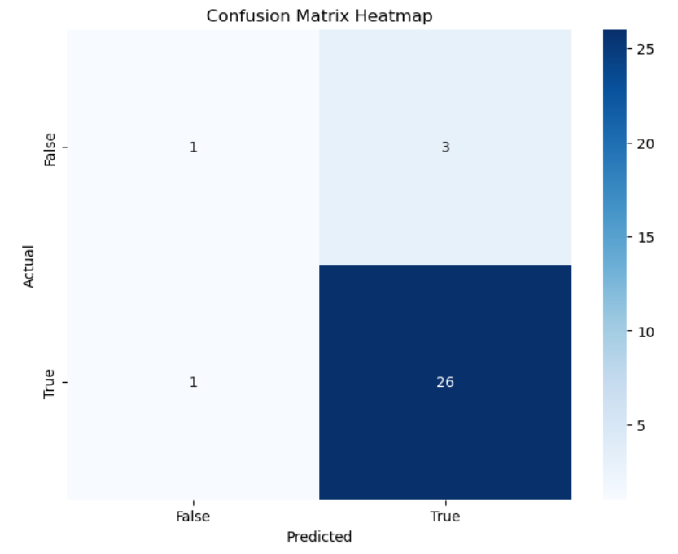

This heatmap was used to visualize the relationship between pitch type, one of the features we passed into the model, and hit type, which was used when deciding if a hit was favorable for the pitcher as our model output.
Model Graphs
Final Ball Heatmap

Pitch Speed by Hit Type

This heatmap was used to visualize the distribution of initial pitch speed, another input into our model, based on the hit type.
Confusion Matrix Heatmap
This confusion matrix showcases our model’s accuracy, including true positives, false positives, true negatives, and false negatives. Here, true indicates that the pitch was favorable to the pitcher, and false indicates that it was not favorable. Through this, we can see that our model had an 87% accuracy, though the dataset was also skewed in favor of true.
3D Bat and Ball Visualization
Hit Close-up

Visualization of how the bat interacts with the ball by zooming in to the frames around when the bat hits the ball.
Full Trajectory

Visualization of the full ball and bat trajectory, with the ball changing color based on the velocity magnitude at that point in time.
Pitch Type Heatmap
Pitch Type to Outcome Counts

Examines the relationship between pitch type and outcome by creating a heatmap with a count of how many times each pitch type resulted in each outcome.
Pitch Type to Action Count

Examines the relationship between pitch type and action by creating a heatmap with a count of how many times each pitch type resulted in each action.
Pitch Type to Inning Number Count

Examines the relationship between pitch type and inning by creating a heatmap with a count of how many times each pitch type was used in each inning.
Pitch Data by Pitch Type
Pitch Initial Speed Frequency

Histogram of the initial speed for each pitch categorized by pitch type.
Pitch Initial Spin Frequency

Histogram of the initial spin for each pitch categorized by pitch type.
Pitch Data by Result
Pitch Speed Distribution

Histogram of the initial speed for each pitch categorized by result.
Pitch Spin Distribution

Histogram of the initial spin for each pitch categorized by result.